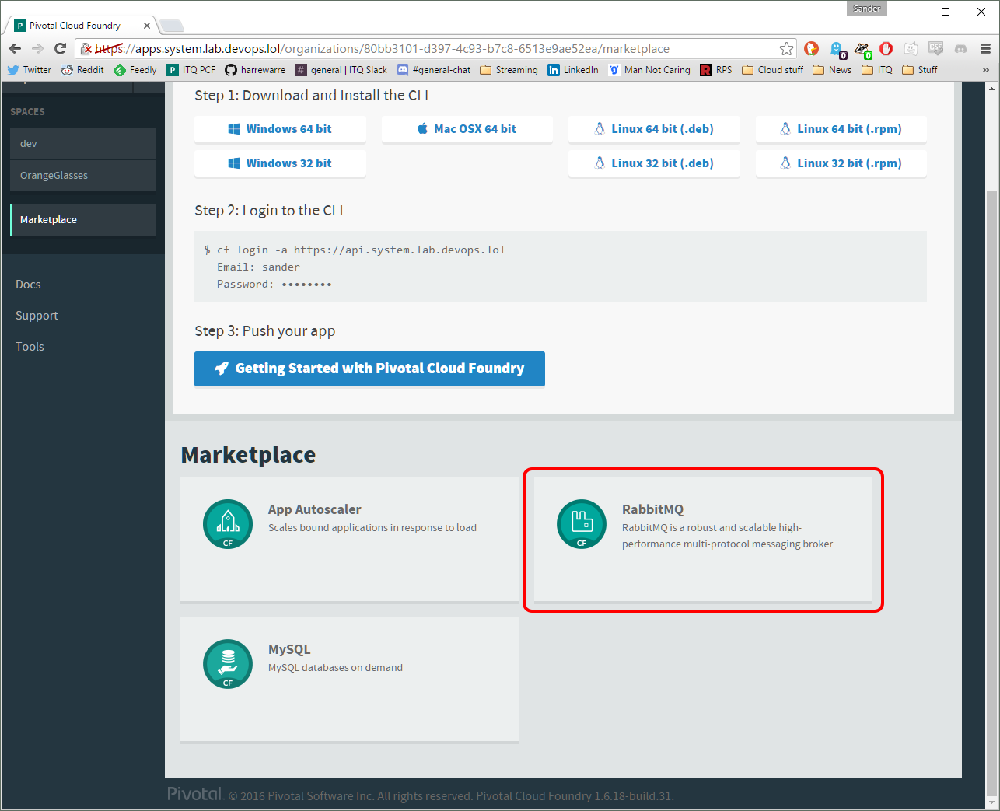
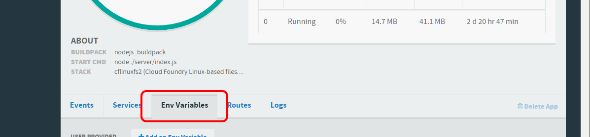

RabbitMQ with NodeJS on Cloud Foundry
I’ve been having some more fun with Cloud Foundry deploying Node apps and wanted the apps to communicate in a more disconnected way. A messaging system is a good fit for such a requirement and lucky for me, (Pivotal) Cloud Foundry has RabbitMQ-as-a-Service for me to use.
So what are we working with? The code is Javascript running on Node, RabbitMQ for the messages and Cloud Foundry is hosting it all.
Installing RabbitMQ
If you don’t have one yet, installing a RabbitMQ service is the first step. There should be one in the CF marketplace (if not, use the Ops manager to install it first on your platform first).

or use the command cf create-service p-rabbitmq standard <your rabbitmq servicename> to install it from the CLI.
Apps
Now that we have a service instance that can process messages, we need an app to use that service. To make things extra simple, we can use a package that handles all the guts of talking to rabbitMQ from Node for us.
Create an empty folder and run npm init to start using packages. Next, install a package called rabbit.js (npm install rabbit.js --save). Because rabbit.js has some good demo code we’ll use that to test the RabbitMQ service.
var context = require('rabbit.js').createContext();
context.on('ready', function() {
var pub = context.socket('PUB'), sub = context.socket('SUB');
sub.pipe(process.stdout);
sub.connect('events', function() {
pub.connect('events', function() {
pub.write(JSON.stringify({welcome: 'rabbit.js'}), 'utf8');
});
});
});
Code from the rabbit.js readme page, see link above.
But there is a crucial part missing! The .createContext() needs a URL to connect to the correct instance of rabbitMQ. Before we get to finding that URL, we need to bind a few things together. Put the demo code into a new file called app.js and save it for later.
Binding services
Before we can do anything at all with the apps and the RabbitMQ service, we need to bind them together so that the apps get access to the service. This can be done manually with the CLI or you can put it in your manifest.yml that instructs Cloud Foundry how to install and run your app.
Use the bind-service command if you use the CLI. If you have a manifest you can set it up like this:
applications:
- name: app-name
<snip>
services:
- <your rabbitMQ servicename>
A helpful tip for deploying using the manifest. If you are not going to use the port that is assinged to your app, disable the health-check feature. Cloud Foundry will monitor your app on the port that is assigned to it but if you aren’t using the port in your app (ie, the port remains closed), Cloud Foundry will think your app is dead and start failing the health-checks. You can disable the checks in your manifest by adding the line health-check-type: none.
If you intend to push this demo app, don’t forget to add a .cfignore file to exclude the node_modules folder.
RabbitMQ URL location
Before we can push the app and start sending messages, we need to tell the app where to send the messages. RabbitMS has a URL that we must pass to the .createContext function in the code in our app.
Because the app and service are bound together, Cloud Foundry will add extra environment variables to the app in which it can find the thing we are looking for: the RabbitMQ URL. The variable itself is called VCAP_SERVICES and you can find it’s contents in the CLI using the command cf env <app-name> or the web interface by opening the app and selecting the environment variables tab.

So with the knowledge that the URL is hidden somewhere in the VCAP_SERVICES variable, we can start digging it out. Here is a handy Node module that does the heavy lifting.
module.exports.getRabbitUrl = function () {
var uri = "";
if (process.env.VCAP_SERVICES) {
var conf = JSON.parse(process.env.VCAP_SERVICES);
uri = conf['p-rabbitmq'][0].credentials.uri;
}
else {
uri ="amqp://localhost";
}
return uri;
}
So what does this do? First we check if there is an environment variable that we are looking for. If that exists we load the contents and, because it is stored as a JSON string, parse it into an object that we can use in Javascript.
Here is an example JSON string of the VCAP_SERVICES variable, I removed a whole bunch of it to condense it to something readable.
"VCAP_SERVICES": {
"p-rabbitmq": [
{
"name": "<name>",
"label": "p-rabbitmq",
"tags": [<snip>],
"plan": "standard",
"credentials": {
<snip>},
"amqp": {<snip>},
"username": "<snip>",
"hostname": "<snip>",
"hostnames": [<snip>],
"vhost": "<snip>",
"http_api_uri": "<snip>",
"uri": "<BINGO>",
"uris": [
"<ALSO BINGO>"
]
}
}
}
]
Looking back at the code above the example we can see the traversal to the uri value: uri = conf['p-rabbitmq'][0].credentials.uri;. The first element of the p-rabbitmq element, then credentials -> uri.
We found the URL! If no variable was found we return the default localhost URL which is can come in handy if you run RabbitMQ locally to test things out before pushing it up to Cloud Foundry.
Now to pass it into the demo code and you are ready to push it (I put the code to resolve the URL in a file called environment.js).
var environment = require("./environment");
var rabbitUrl = environment.getRabbitUrl();
console.log("Connecting to rabbitMQ at " + rabbitUrl);
var context = require('rabbit.js').createContext(rabbitUrl);
context.on('ready', function() {
var pub = context.socket('PUB'), sub = context.socket('SUB');
sub.pipe(process.stdout);
sub.connect('events', function() {
pub.connect('events', function() {
pub.write(JSON.stringify({welcome: 'rabbit.js'}), 'utf8');
});
});
});
Push the app to Cloud Foundry and check the logs (cf logs <app-name> --recent) for the output, which should show the welcome: rabbit.js message that was published.
Wrapping up
Using the basics learned here, you can set up multiple services that exchange messages to perform tasks in a fully disconnected infrastructure making it very easy to expand/change the system with more (micro!)services because no single service directly depends on the existence of another service.
When binding apps and services you can easily gather details about the bound services in the VCAP_SERVICES environment variable. As we saw in this case, we resolved the URL for RabbitMQ but the process for other services is similar.
Rabbit.js can do quite a bit more than just PUB/SUB, you can find out more on doc page for it.
The code from this post can be found here: https://github.com/harrewarre/cf-rabbit-demo
Have fun!